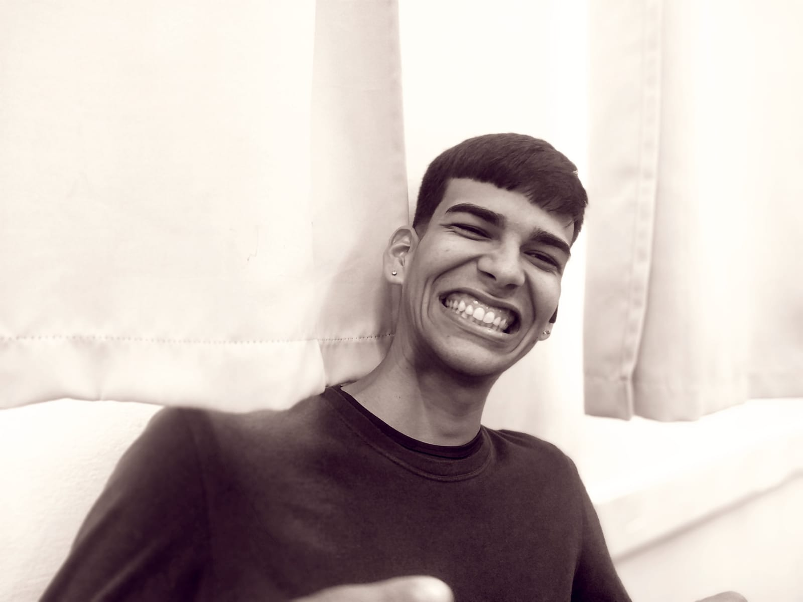
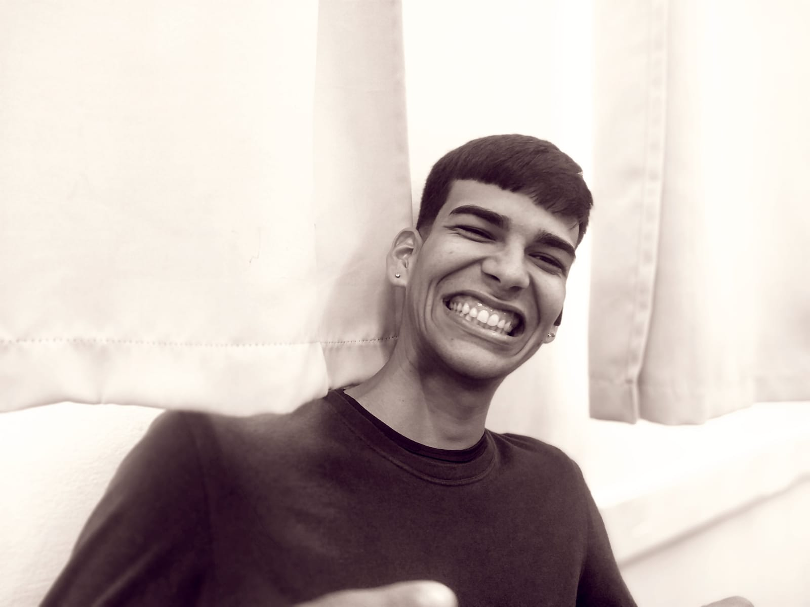

Marcos é uma figura única, famoso por suas excentricidades, incluindo seu xadrez peculiar, dança hilária e culinária enlatada.
Marcos é uma figura única em nosso grupo de amigos, conhecido por suas peculiaridades e excentricidades. Ele se autodenomina mestre do xadrez, embora suas estratégias se resumam a pegar a última fatia de pizza. Sua dança é tão estranha quanto engraçada, e sua suposta culinária gourmet se resume a abrir latas de comida enlatada. Apesar de tudo, Marcos é amado por sua singularidade e pelas histórias bizarras que ele compartilha.
Acesse minhas redes
 Instagram

Instagram
